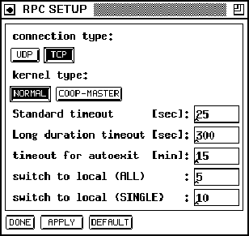

Next: New Panel
Up: Control Panels
Previous: SNNS RPC Panel
With the help of this panel the current settings of the marked simulator
kernel are displayed and modified.
Figure: The RPC Setup Panel
-
 and
and 
switch between the
connection types UDP and TCP. If the connection type is changed, the
current connection is terminated and a new connection is
established. UDP and TCP are the two possible protocols
that are build directly upon the internet protocol (IP). UDP
(unreliable datagram protocol) is a little bit faster than
TCP. Since TCP is more reliable we recomend it for usage
with xguirpc.
- and set the mode of
the kernel. The function of the coop-master mode has not been
implemented in this release of the SNNS.
- Standard timeout The waiting interval of the graphical
user-interface, which is used to determine when an rpc error should
be displayed.
- Long duration timeout The long duration timeout field is
responsible for the waiting time in the learning process. It
specifies the time xguirpc will wait for a kernlrpc
program to finish a training cycle. If there is no response within
that period of time xguirpc will assume an errror in the
program execution. This value should be rather large for big nets or
pattern sets, otherwise an error will be displayed even if there is
actually none.
- Timeout for autoexit is responsible to specify
how long a simulator kernel will wait without receiving any messages
before it automatically stops. This value is entered in minutes.
- switch to local (ALL) Specifies the threshold for
asynchronous execution mode. If there are fewer training cycles
specified in the control panel, xguirpc will wait for the
remote host to finish learning (synchronous mode). If there are more
training cycles specified, xguirpc will start training on the
remote host and then immediately switch back to `direct local' to
allow the user further input as long as kernlrpc is executing
training on the remote host ( asynchronous mode). This value is
relevant only for the training of all patterns.
- switch to local (SINGLE) Same as switch to local
(ALL) but with relevance only to learning a single pattern.
- All entered values are set only after this button is
pressed.
- will use the default values.
- closes the window.
Next: New Panel
Up: Control Panels
Previous: SNNS RPC Panel
Niels.Mache@informatik.uni-stuttgart.de
Tue Nov 28 10:30:44 MET 1995